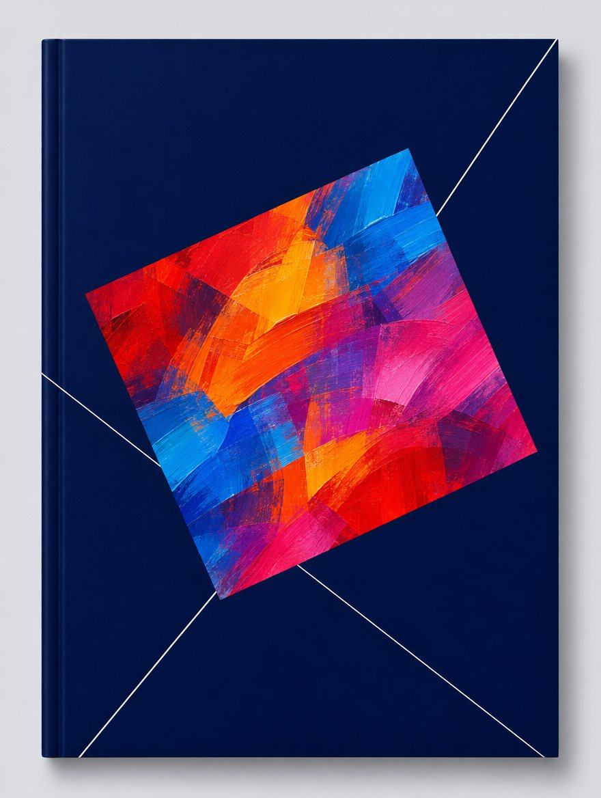

OUR PURPOSE
학회는 강의실에만
있지 않습니다
NEXT ·
현장에서 배웁니다Learning, in the field.
LOADING SEQUENCE0%
01 — WHERE
학회가 기업으로
갑니다
산업교육 현장포럼은 호텔 연회장이 아니라 기업의 연수원에서 열립니다.
02 — HOW LONG
2013년부터
22번
LG CNS에서 시작해 NAVER, 삼성전자, SK텔레콤, LG전자, LS, 그리고 GS건설까지.
03 — WHY
강의실 밖에서
배우는 HRD
그 회사의 인재육성 사례를, 그 회사의 공간에서 듣고 토론합니다.
ABOUT KSHRD · SINCE 1989
산업계와 학계가
한 테이블에 앉는
학회입니다
학회소개 →
산 · 학 · 관 · 연
OUR WAY
KSHRD IN NUMBERS
FIELD FORUM ARCHIVE · 2013 — 2026
22번의 현장
첫 포럼은 2013년 10월 LG CNS였습니다. 그 뒤로 회차마다 다른 기업을 찾아가 인재육성 사례를 들었고, 2024년부터는 해외학자포럼이 더해졌습니다.
01 / 22
※ 카드 사진은 시연용 생성 이미지이며 해당 기업의 실제 공간이 아닙니다.
CONFERENCE · 2026 SPRING THEME
1997년 ‘무한경쟁시대에 대비하는 인적자원 개발전략’부터 해마다, 그해 일터가 묻는 질문을 주제로 삼아 왔습니다.
WORKSHOP · 토론의 장

THE JOURNAL
「산업교육연구」
최근 소식
공지사항 →MEMBERS & INSTITUTIONS
함께하는 기관
인적자원개발 현장 전문가, 학계 인사, 관련 기관 전문가와 함께 주요 기업의 인재개발 조직이 참여하고 있습니다.
MEMBERSHIP
함께 연구할 분을
기다립니다
인적자원개발을 전공했거나 현장에서 일하는 분이라면 누구나. 개인회원 · 임원 · 기관(단체)회원으로 참여할 수 있습니다.
입회안내 →
행사안내 및 접수 →